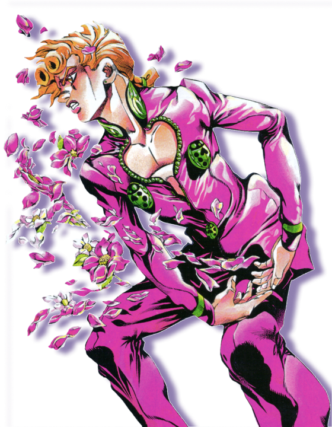
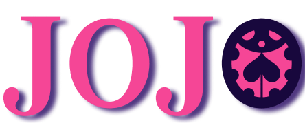
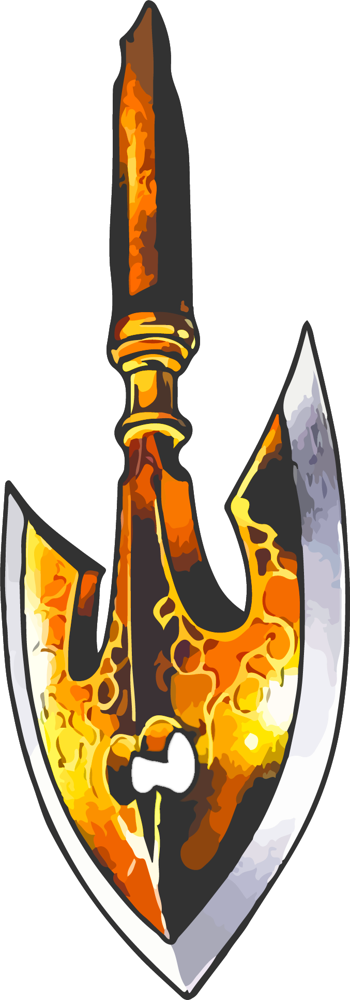

Festival de animación!
Eeste es un festival de la serie
de animación JoJo’s Bizarre Adventure!
En este festival se celebran las seis partes animadas
de la serie y se darán conferencias por miembros del
equipo de animación entrando en detalles sobre el estilo artístico y el
proceso de animación y de adaptación del manga original por Hirojiko Araki!


